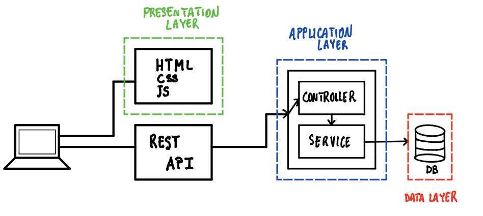
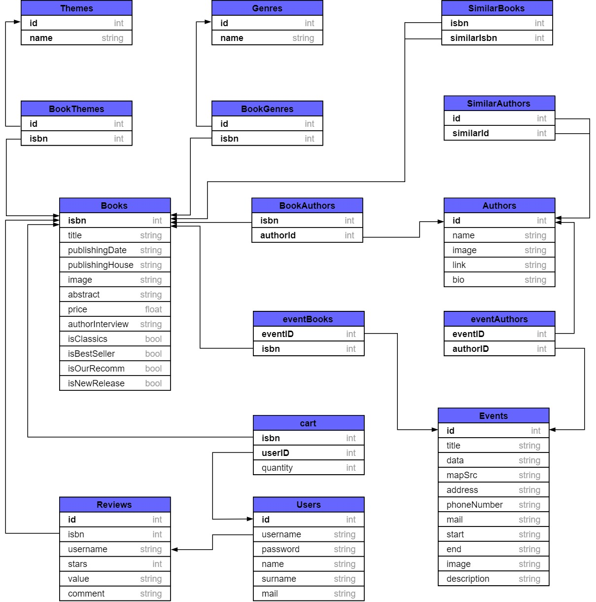

Documentation of the Backend part
Deliverable D1
General group information
Links to other deliverables
- Deliverable D0: the web application is accessible at
this address.
- Deliverable D2: the YAML or JSON file containing the specification of the app
API can be found at this address.
- Deliverable D3: the SwaggerUI page of the same API is available at
this address.
- Deliverable D4: the source code of D0 is available as a zip file at
this address.
- Deliverable D5: the address of the online source control repository is
available this address. We hereby declare that this
is a private repository and, upon request, we will give access to the
instructors.
Specification
Web Architecture

The APIs return JSONs. In this way the client side the html pages send one or more requests to the server, which will respond by sending JSON files; the HTML page will therefore base its content (writings, images, etc.) on what will be written on this file
API
REST compliance
The backend implementation follows REST principle, however we used a cookie login to guarantee
session's persistent and this is something that in general breaks REST principle
of statelessness but we thought that a stateless API key login would be inappropriate
We opted for a model where data is returned as a jsonArray containing jsonObjects.
The reason behind this decision is that every endpoint ALWAYS return what is expected or,
as per specification, an appropriate error. We decided to avoid big request with large amount of
data and informations to adhere to the principle that simple is, not always but often, better.
So for example if /books/?isBestSeller={value} is called, the API user know that it will always produce
an array of books, or an array of error/status and he can check (and should definitely do it) the content of the response beforehand just by looking at the response code.
Thus, using a more elaborated model based on jsonObject containing jsonProperty and JsonArray (like twitter API for example),
was not needed and in general it would have been an overkill.
Data model

How these map to the OpenAPI data model?
Through a middleware (knex) we create JSON files based on the database content.
This JSON files will be the ones that the open API wil send to the client
Implementation
Tools used
Describe here which tools, languages and frameworks did you use for the backend
of the application.
- node.js 8.9.4 - asynchronous framework for the backend code
- npm.js 5.6.0 - Node official packet manager
- express.js - Node famous middleware
- passport.js - widely used authentication and session manager library
- knex.js - database management middleware for Postgres
- Postgres 11.1 - DBMS
- Javascript
- Heroku
- Postman
Discussion
Describe here:
- How did you make sure your web application adheres to the provided OpenAPI
specification?
We tested our API using POSTMAN
- Why do you think your web application adheres to common practices to partition
the web application (static assets vs. application data)
Our webapp dynamic assets are sent via Json using the provided API. The frontend
of the application was developed as a module that was integrated after with the backend.
Ideally, it would be possible to develop a totally different presentation layer,
for example a mobile app, and integrate it with the provided API.
- Describe synthetically why and how did you manage session state, what are the
state change triggering actions (e.g., POST to login etc…).
There are 3 state change REST call being:
Session persistence is obtained using a cookie provided to the client after login.
- Which technology did you use (relational or a no-SQL database) for managing
the data model?
We used a Postgres SQL database , the choice was dictated by our familiarity with
heroku PaaS features.
Task assignment
- Alessandro worked principally on Front end part (HTML Page creation, CSS specification and some JS files)
- Sergio worked principally on the development of the backend and API
- Federico worked both in Front End and Back part (ajax request to server, router path creation, some css modification, etc)
Analysis of existing API
Describe here if you have found relevant APIs that have inspired the OpenAPI
specification and why (at least two).
Our API was inspired by:
We tried to find a balance between using good practices and "common sense".
We learned that there's no "recipe" for a perfect API and in general the consensus
shared by developers is that what really make an API intuitive and easy to use is
the capacity to adapt the good practises to the needed application during development and
most of all writing a good documentation.
Learning outcome
What was the most important thing all the members have learned while developing
this part of the project, what questions remained unanswered, how you will use
what you’ve learned in your everyday life?
Examples:
- Sergio - I learned how to write an API and its documentation and
how to manage a secure connection using cookies. Was really interesting
to learn how javascript callbacks and promises logic work and sure it something
that i would love to master. I've used the skills developed on an IoT university project
to write an API for an ESP8266 microcontroller and an MQTT server.
- Federico - I learned how to fetch data from an API and render it on the frontend
side of the application using Ajax. In the past i had worked at the design of HTML pages.
In the future i would like to learn more about backend development.
Alessandro - I learned how to design and style HTML pages with CSS and javascript. I learned
the basic of nodejs and i'm planning to use it for a side project in the future